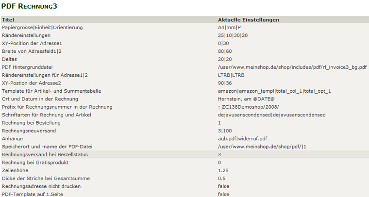

Konfiguration und Anpassung
Jetzt wo das Modul einsatzbereit ist, kannst Du daran gehen, Deine eigenen Vorlagen und Texte zu verwenden.
Falls Du das Modul gleich in einem Liveshop eingebaut hast (tzzz tzzz tzzz), stelle unbedingt unter Konfiguration > pdf Rechnung 3 > Rechnung bei Bestellung auf Null.
1)
Eigene Rechnungsvorlage erstellen
Erstelle ein pdf so wie Du es haben willst. Als Orientierung schau Dir die Datei an, die mitgeliefert wurde:
includes/pdf/rl_invoice3_bg.pdf
Speichere dieses pdf unter einem Namen Deiner Wahl ab (z.B. meinefirma_rechnungsvorlage.pdf)
Lade Dein pdf in includes/pdf hoch.
Nun noch im Admin unter Konfiguration > pdfRechnung3 den Dateinamen ändern bei:
pdf Hintergrunddatei
Also z.B. auf:
/var/www/html/xxxx/html/shop/includes/pdf/meinefirma_rechnungsvorlage.pdf
Erstelle danach probeweise eine pdf Rechnung, um zu sehen, wie die Rechnung nun mit Deinem neuen Hintergrund aussieht.
2)
Eigene pdfs für AGB und Widerruf erstellen
Falls Du das Mitsenden von AGB und Widerruf nutzen willst, erstelle auch dafür
2 eigene pdf Dateien:
Um zusätzlich die AGB mitzusenden, ein pdf mit den AGB erstellen und z.B. als agb.pdf abspeichern.
Die agb.pdf in folgendes Verzeichnis in Zen-Cart hochladen:
includes/pdf
Dadurch wird das mitgelieferte AGB-Beispiel überschrieben
Dann unter Konfiguration > pdf Rechnung 3 > Anhänge folgendes eintragen:
agb.pdf
Um zusätzlich auch noch eine Info zum Widerruf mitzusenden, ein pdf mit der Widerrufsinfo erstellen und z.B. als widerruf.pdf abspeichern.
widerruf.pdf in folgendes Verzeichnis in Zen-Cart hochladen:
includes/pdf
Dadurch wird das mitgelieferte Widerrufsbeispiel überschrieben
Dann unter Konfiguration > pdf Rechnung 3 > Anhänge folgendes eintragen:
agb.pdf | widerruf.pdf
3)
Mit den mitgelieferten Schriftarten experimentieren
Das Aussehen der verschiedenen mitgelieferten Schriften kannst Du in folgender Datei ansehen:
includes/pdf/font/font_example.pdf
Voreingestellt in der Konfiguration sind die Schriftarten Dejavu Sans Condensed
für die Rechnungstexte und Freemono für die Artikeltexte und die Summen.
Alle verfügbaren Schriften findest Du im Ordner includes/pdf/font
Um nun andere der mitgelieferten Schriftarten zu verwenden, stelle unter
Schriftarten für Rechnung und Artikel zwei andere ein, z.B.
dejavuserif | freeserif
Erstelle dann wieder eine pdf Rechnung und prüfe das Ergebnis.
Falls Dir keine der Schriften zusagt, ist es möglich eigene Schriftarten zu verwenden. Das ist allerdings nur für versierte User empfohlen, da die Schriften zuerst in mehreren Verfahren konvertiert werden müssen. Ein Anleitung dazu ist in den FAQ zu finden.
4)
Restliche Einstellungen vornehmen
Die übrigen Konfigurationsmöglichkeiten unter Konfiguration > PDF Rechnung 3 sind immer erklärt, wenn Du auf Bearbeiten clickst:

Hier ein paar Erläuterungen zu den wichtigsten Möglichkeiten:
PDF Hintergrunddatei
Falls Du den Dateinamen Deiner Vorlage geändert hast, musst Du hier von rl_invoice3_bg.pdf aud Deinen Dateinamen für die Rechnungsvorlage ändern. Es ist der absolute Pfad zur Vorlage anzugeben. Die pdf Rechnung unterstützt unterschiedliche Vorlagen für deutsch und englisch. Wenn Du englisch im Shop aktiv hast und für englischsprachige Kunden eine eigene Vorlage verwenden willst, wechsle in den englischen Admin und trage dann hier den Pfad zu Deiner englischen Vorlage ein. Als Beispiel wird die includes/pdf/rl_invoice3_bg_en.pdf mitgeliefert.
Rechnungsneuversand
Hier kannst Du einen Bestellstatus oder mehrere Bestellstati einstellen, bei denen die pdf Rechnung nach Aktualisieren der Bestellung erneut versendet werden soll. Voreingestellt ist 3 (das ist normalerweise der Status "versendet") und 100 (ein eigener Bestellstatus, der vom Modul mitgeliefert wird). Überprüfe unter "Lokalisation" > "Bestellstatus" welche Werte die Bestellstati in Deinem Shop haben und stelle dann hier die gewünschten Werte ein.
Rechnungsversand bei Bestellstatus
Hier wird definiert, bei welchem Bestellstatus die pdf Rechnung automatisch gemailt wird. Wenn die Rechnung gleich bei der Bestellung mitgemailt werden soll, muss hier auf 1 umgestellt werden (1 ist normalerweise der Status "Wartet"). Status 3 (versendet) ist für Shops interessant, die Downloadartikel anbieten und die gleich nach der Bezahlung freigeben. Auch hier vorher unter "Lokalisation" > "Bestelllstatus" unbedingt überprüfen, welche Werte in Deinem Shop wirklich aktiv sind. Und auch überprüfen welche Bestellstati bei den angebotenen Zahlungsarten zugeordnet sind.
Rechnung bei Bestellung
Das ist die globale Einstellung. Wird sie auf 0 gestellt, wird nie automatisch eine Rechnung mitgemailt, egal was bei Rechnungsversand bei Bestellstatus eingestellt ist.
Speicherort und -name der PDF-Datei
Hier wird eingestellt, ob die pdf Rechnung überhaupt am Server gespeichert werden soll. Und wenn ja in welchem Ordner. Voreingestellt ist der Ordner pdf im Shophauptverzeichnis. Wenn dieser Ordner verwendet wird, unbedingt sicherstellen, dass der Inhalt nicht einfach mit www.meinshop.de/pdf aufgelistet wird. Also entweder eine leere index.html in diesen Ordner legen. Oder per .htaccess das Auflisten des Ordnerinhalts unterbinden. Dazu eine Datei mit folgendem Inhalt erstellen:
Options -Indexes
Als .htaccess abspeichern und ins pdf Verzeichnis legen. Möglicherweise ist aber serverseitig bereits eingestellt, dass der Verzeichnisinhalt bei fehlender index Datei nicht angezeigt wird. Der Ordner für die Rechnungen muss beschreibbar sein (chmod 777)
Aus Sicherheitsgründen werden die erstellten pdf Rechnungen nicht einfach nur mit der Rechnungsnummer als Dateiname sondern mit einem langen zufällig generierten Dateinamen abgespeichert (z.B. 8_070599b1ec86ca75deac4696ca5f37eb.pdf)
Eine noch bessere Absicherung der Rechnungen ist - falls das serverseitig möglich ist - als Speicherort einen Ordner unterhalb des Root Verzeichnis zu verwenden. Ein solcher Ordner kann zwar vom Webserver gelesen werden, ist aber per www nicht erreichbar.
Wenn ein solcher Ordner verwendet werden soll, den Pfad entsprechend anpassen.
Wenn z.B. der normale Pfad zum pdf Ordner innerhalb des Shopverzeichnisses (Voreinstellung) so lautet:
/home/user/www.meinshop.de/shop/pdf
umstellen auf:
/home/user/pdf
Auch ein solcher Ordner muss natürlich vom Webserver beschreibbar sein (chmod 777)
Die Rechnung kann dann trotzdem vom Kunden in seiner Bestellhistory heruntergeladen werden. Wichtig ist, dass unter Konfiguration > GZip Komprimierung die gZip Komprimierung NICHT eingeschaltet ist!
PDF Template auf erster Seite
Wenn zahlreiche Artikel bestellt werden und die auf der Rechnung nicht auf einer Seite Platz haben, erfolgt ein Seitenumbruch mit Berechnung einer Zwischensumme und Übertrags auf die zweite Seite. Hier kannst Du einstellen, ob der Rechnungsfooter auch auf der zweiten Seite erscheinen soll.
Template für Artikel- und Summentabelle
Definiert sind die Templates in folgender Datei:
includes/pdf/rl_invoice3_def.php
Voreingestellt ist: amazon|amazon_templ|total_col_1|total_opt_1
In der Datei sind also folgende Werte für das Aussehen verantwortlich:
$colsP['amazon'] = array(
'subtotalI' => '...',
'subtotalE' => '...',
'qty' => TABLE_HEADING_QTY,
'model' => TABLE_HEADING_PRODUCTS_MODEL,
'name' => TABLE_HEADING_PRODUCTS,
'singleE' => TABLE_HEADING_PRICE_EXCLUDING_TAX_AMAZON,
'tax' => TABLE_HEADING_TAX,
'sumE' => TABLE_HEADING_TOTAL_EXCLUDING_TAX_AMAZON,
);
$optionsP['amazon_templ'] = array("subtotal"=>'subtotalE',
"paperOriantation"=>"P",
"fontSize" => 8,
'showHeadings' => 1,
'shaded' => 1,
'xPos' => 'left',
'xOrientation' => 'right',
'width' => $realPW-35,
'cols' => array(
'subtotalI' => array('justification' => 'R', "width" => 0),
'subtotalE' => array('justification' => 'R', "width" => 0),
'qty' => array("justification" => "L", "width" => 15),
'model' => array("justification" => "L", "width" => 25),
'name' => array('justification' => 'L', "width" => 75),
'singleE' => array('justification' => 'R', "width" => 25),
'tax' => array("justification" => "R", "width" => 15),
'sumE' => array('justification' => 'R', "width" => 25),
)
);
Um z.B. die Schriftgröße zu verkleinern den fontSize auf 7 stellen.
Um die Breite der einzelnen Spalten zu ändern die Werte bei width entsprechend anpassen.
Sollten andere Inhalte in den Spalten gewünscht sein, ein anderes Template auswählen oder sich ein eigenes Template nach dem vorgegebenen Muster zusammenstellen.
Eine Vorschau der verschiedenen vordefinierten Spaltendefinitionen bekommst Du durch Aufruf des folgenden Links:
admin/rl_invoice3.php?oID=3&test=PDF
Es wird dann eine Testrechnung mit allen verschiedenen Templates produziert (ohne Summen).